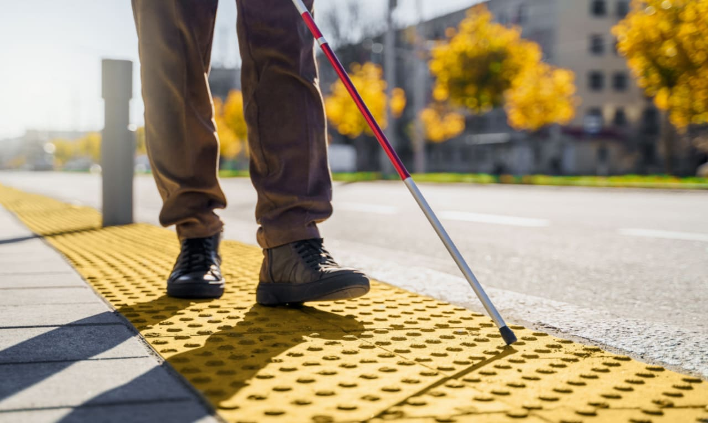
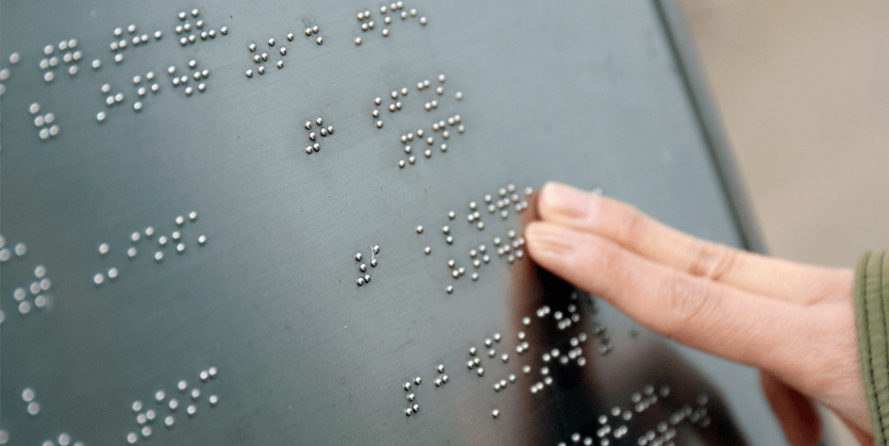

Bem-vindo ao Projeto de TCC:
Sensor para Deficientes Visuais.
Nós damos as boas-vindas ao nosso projeto de Trabalho de Conclusão de Curso (TCC),
onde exploramos soluções inovadoras para melhorar a qualidade de vida das pessoas com deficiência visual.
Nosso projeto foca em criar um sistema inovador de sensor para deficientes visuais utilizando tecnologia Arduino.
Este sensor visa fornecer uma maior independência e segurança para os usuários,
permitindo uma maior autonomia em ambientes diversos. Nossos Objetivos são:
Desenvolver um sistema de detecção inteligente e acessível,
Facilitar a navegação e a interação dos deficientes visuais em seu ambiente,
Utilizar tecnologia Arduino para criar uma solução de baixo custo e de código aberto.
Nossa abordagem será feita com os princípios da tecnologia Arduino,
combinados com sensores e técnicas de programação avançadas,
estamos projetando um dispositivo que seja intuitivo, preciso e eficiente.
A importância desse projeto visa não apenas fornecer uma solução técnica,
mas também criar um impacto significativo na vida diária das pessoas com deficiência visual.
Este site servirá como uma plataforma para acompanhar nosso progresso,
aprender mais sobre a tecnologia envolvida e contribuir para o desenvolvimento do projeto.
Não hesite em nos contatar se tiver alguma dúvida, sugestão ou interesse em colaborar!
Junte-se a nós nesta jornada para tornar o mundo um lugar mais acessível e inclusivo para todos.
O Projeto de TCC:
Sensor para Deficientes Visuais é uma iniciativa dedicada a criar uma solução inovadora para melhorar a qualidade de vida das pessoas com deficiência visual.
Nossa equipe é composta por estudantes dedicados e orientadores apaixonados pela causa da acessibilidade e inclusão.
Nosso principal objetivo é desenvolver um sistema de sensor acessível e eficaz que permita aos deficientes visuais navegar com mais segurança e independência em diferentes ambientes.
Acreditamos que todos devem ter acesso a tecnologiasque promovam a inclusão e a igualdade de oportunidades.
O projeto foi inspirado pela necessidade de soluções inovadoras que abordem os desafios enfrentados pelas pessoas com deficiência visual em suas atividades diárias.
Observamos a importância de criar ferramentas acessíveis que possam capacitar esses indivíduos a explorar o mundo ao seu redor de forma mais independente. Nossa abordagem combina pesquisa acadêmica,
tecnologia de ponta e um profundo compromisso com a comunidade. Estamos dedicados a entender as necessidades específicas dos deficientes visuais e a criar uma solução que seja prática,
acessível e fácil de usar. Se você compartilha de nossa missão e está interessado em colaborar conosco, há várias maneiras de se envolver. Você pode acompanhar nosso progresso neste site,
fornecer feedback, ou até mesmo contribuir com suas habilidades e conhecimentos.
podemos fazer a diferença na vida das pessoas com deficiência visual.
Equipe é composta por:
Lucas Ferreira
Lukas Eduardo
Miguel Magri
Pedro Miguel
EM DESENVOLVIMENTO...